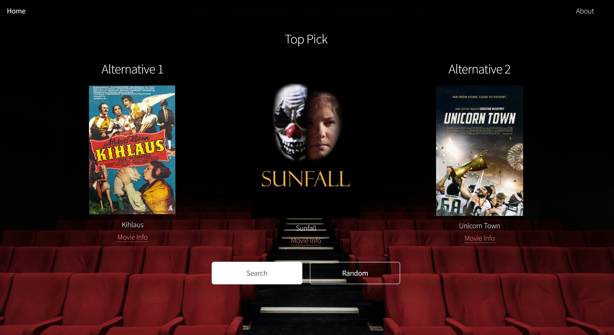

FACTHOLE
This project is an experiment in exploring fun ways of utilizing AI and automation.
On this website I'm running an automated daily script that scrapes Donald Trump's Truth Social feed and runs it through a small AI agent that is capable of searching the web.
The agent then decides, sometimes with doubtful reasoning, if Mr Trump has made any false claims before storing the results accordingly in a Supabase database.
The whole workflow is automated and the script runs once every day, all I have to do is sit back and watch the judgement roll in.
De-Muskifier
Ever since I started studying programming my friends have had a habit of giving me weird and funny ideas for side projects, and finally one of them said “I'm so sick of hearing about Elon Musk everywhere. Can you create a solution?” and thats really where this thing started.
The result is a browser extension for Firefox that replaces images and mentions of Elon Musk/Tesla/SpaceX with images of raccoons and facts about them, because why not? Not only are you freed from hearing about your least favorite billionaire - you are at the same time being given awesome images of raccoons and weird and funny facts about them. You'll have forgotten about him in no time!
A few notes about this extension:
- It replaces content by keyword search from scanning your active page.
- Sometimes it works "too well" and hides unrelated stuff. Did an article about rocket science vanish? Probably. But did it also get replaced with something wholesome about raccoons? Absolutely.
- The point isn't perfection - it's to make you stop thinking about Elon Musk and instead channel your energy into something joyful, like raccoons!
Why raccoons?
Raccoons are great! Did you see the way they carry stuff while walking? They're like little furry gremlins, who doesn't love them?
FlickPick
Moviematching powered by machine learning!
The user input is converted from a text into a number called a vector,
using something appropriately called a vectorizer.
Something similar is then done to the plotline and/or keywords of every movie in the database,
and using a type of machinelearning called Nearest Neighbors, FlickPick compares the
input vector to each movies' vector and finds the closest matches, or nearest neighbors.
Et voilà!
We have our matches.
Note:
FlickPick was created as a group assignment for my machinelearning course with a four person team.
I was responsible for creating the frontend and the actual vectorizing and machine learning parts of the project.
FlickPick frontpage.

FlickPick results page. The results shown are the three nearest neighbors found based on the keywords of the search.